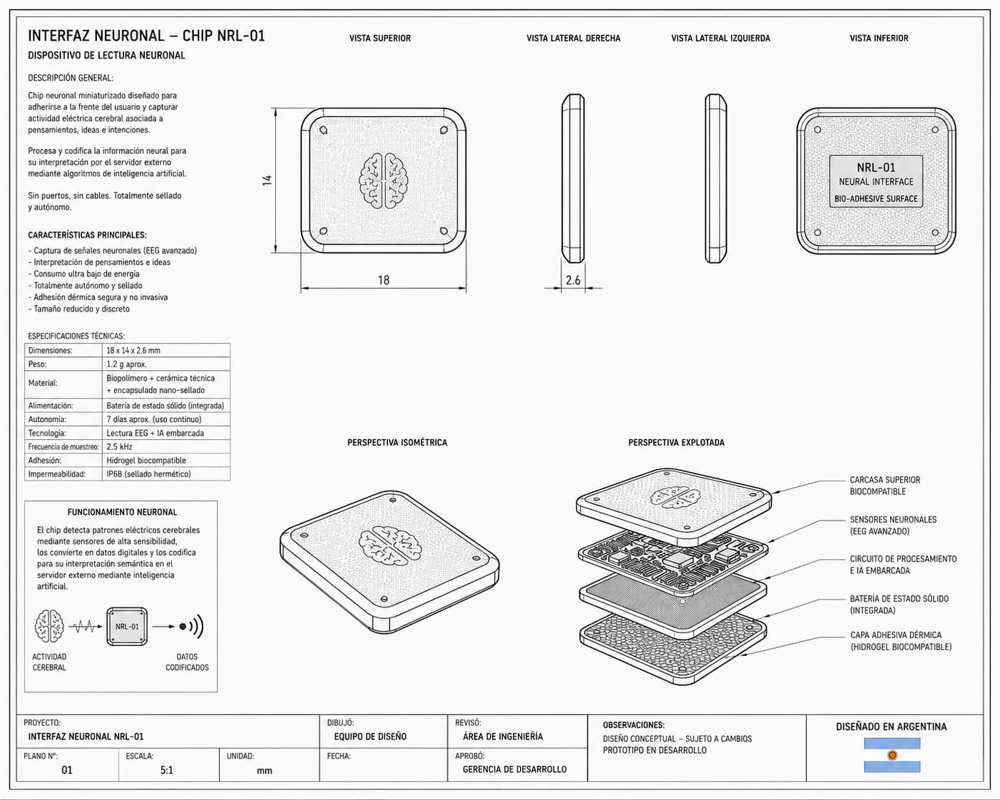
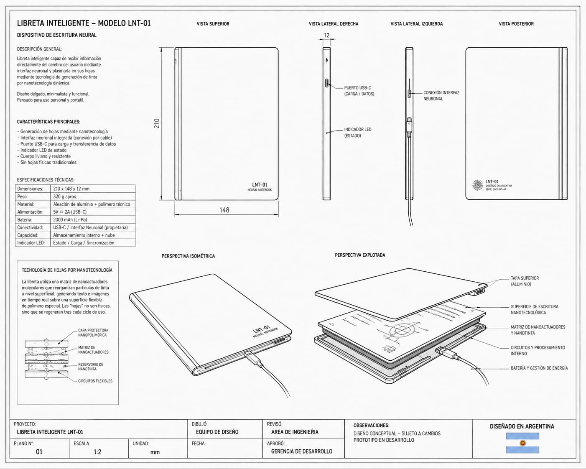

Rapidez de procesamiento
La señal se procesa en nuestra infraestructura de interconexión para reducir la espera entre imaginar y ver el resultado.
Flujo continuoInteliBook / 02
Una libreta inteligente para escribir, dibujar y diagramar con la velocidad de tu pensamiento.

El sistema
El chip de interfaz detecta patrones de intención y los envía a nuestra infraestructura de interconexión. Allí, modelos de IA procesan la señal para elegir la representación más precisa.
El resultado llega a InteliBook como una composición editable: palabras, formas, líneas y relaciones espaciales.
Interfaz neuronal
Este plano independiente muestra el componente que conecta la actividad neuronal con el sistema de procesamiento de Snailware.
El plano actual se encuentra en assets/chip-diagram-placeholder.jpeg.

Tecnología de vanguardia
InteliBook une una interfaz neuronal, procesamiento inteligente y una superficie de escritura diseñada para convertir pensamientos en resultados.
La tecnología se adapta a la forma en que trabajas: desde una nota rápida hasta un esquema visual complejo, sin obligarte a traducir primero tus ideas a palabras.
La señal se procesa en nuestra infraestructura de interconexión para reducir la espera entre imaginar y ver el resultado.
Flujo continuoUn dispositivo pensado para acompañarte en sesiones de trabajo, estudio y creación sin depender de una hoja que se pierde o se deteriora.
Hecha para durarLa conexión cifrada y el procesamiento contextual ayudan a proteger tu información y a mantener tus ideas organizadas.
Diseñada con criterioPor qué InteliBook
Infraestructura
Canal cifrado entre el chip y los servidores de Snailware.
IA contextual que distingue texto, dibujo, esquema y necesidad.
La información interpretada vuelve a InteliBook lista para trabajar.